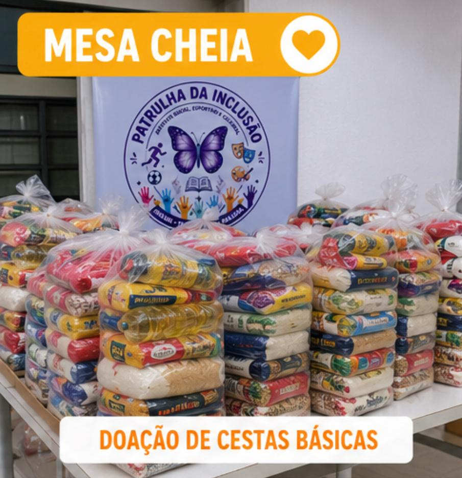
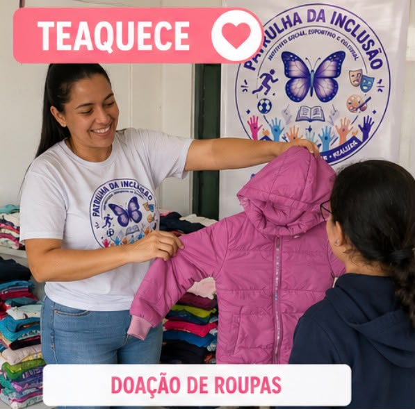
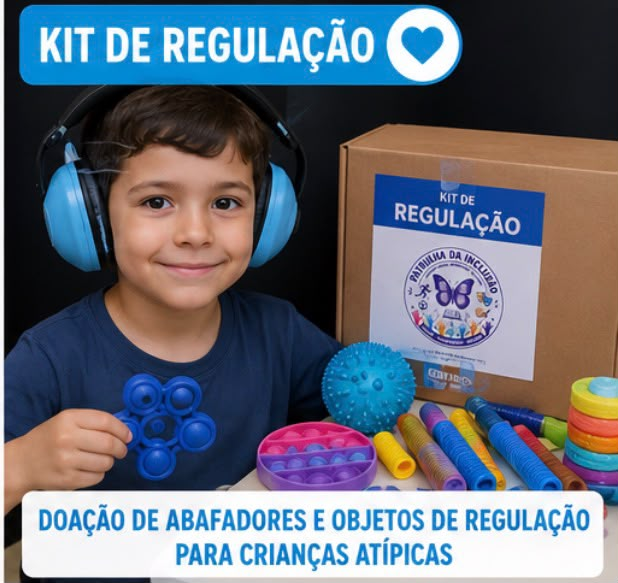
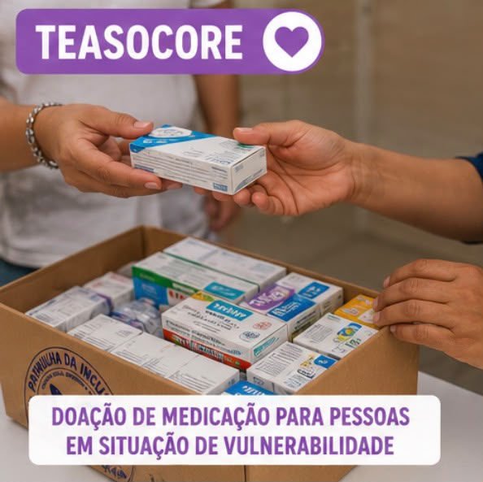
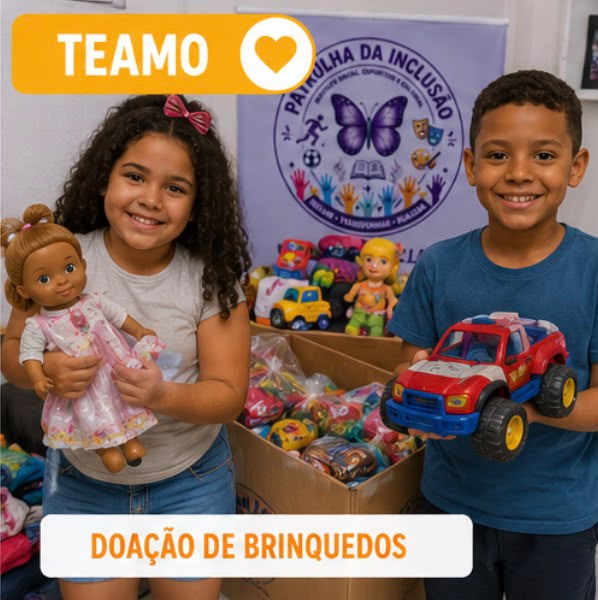
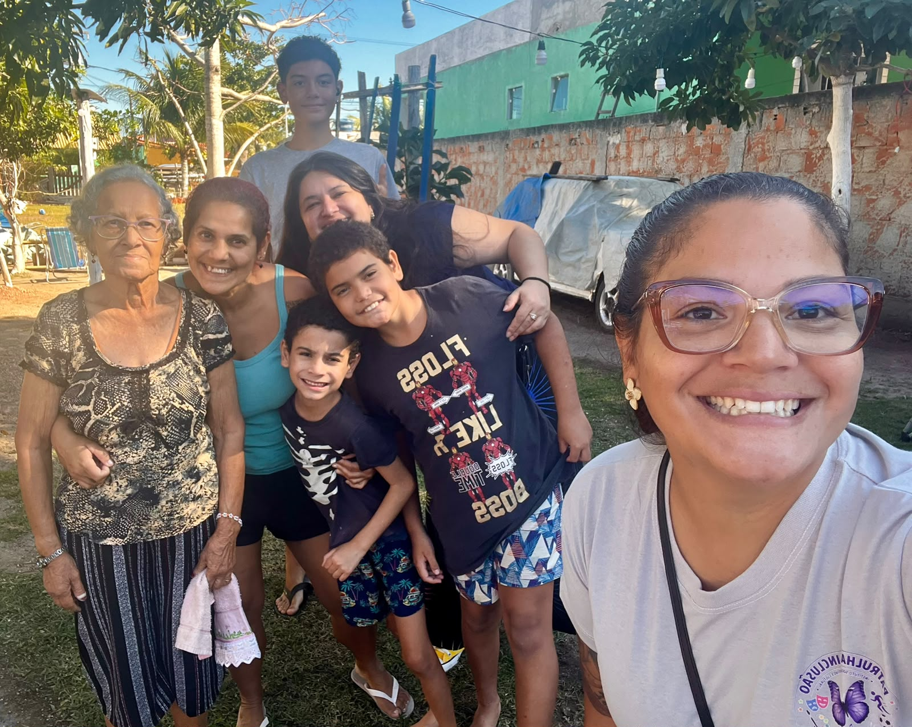

Mesa Cheia
Projeto voltado à doação de cestas básicas para famílias em situação de vulnerabilidade social. Nosso objetivo é garantir alimento na mesa de quem mais precisa, levando dignidade, esperança e cuidado.
Ações que acolhem, incluem e criam oportunidades para a comunidade.

Projeto voltado à doação de cestas básicas para famílias em situação de vulnerabilidade social. Nosso objetivo é garantir alimento na mesa de quem mais precisa, levando dignidade, esperança e cuidado.

Promove a arrecadação e distribuição de roupas, calçados e agasalhos para crianças, jovens e adultos em situação de necessidade. Um gesto de solidariedade que aquece o corpo e o coração.

Realiza a doação de abafadores de ruído e outros itens de regulação sensorial para crianças atípicas. A iniciativa busca proporcionar mais conforto, bem-estar e qualidade de vida no dia a dia.

Projeto destinado à doação de medicamentos para pessoas em situação de vulnerabilidade. Trabalhamos para que o acesso ao tratamento não seja interrompido por dificuldades financeiras.

Espaço de acolhimento por meio de rodas de conversa virtuais para mães atípicas. Um ambiente seguro para compartilhar experiências, fortalecer vínculos e oferecer apoio emocional.

Promove a doação de brinquedos para crianças, levando alegria, inclusão e momentos de felicidade. Acreditamos que brincar também faz parte do desenvolvimento e da construção de um futuro melhor.

Cada iniciativa nasce da escuta da comunidade e da colaboração entre voluntários, famílias, apoiadores e parceiros. O objetivo é transformar necessidades reais em oportunidades concretas.
Doe, seja voluntário ou conecte a organização a novos parceiros.
Como ajudar